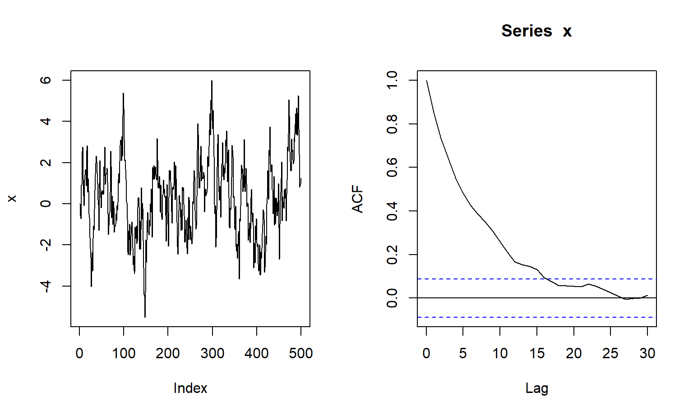
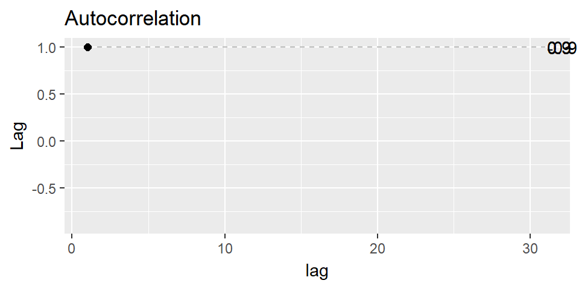
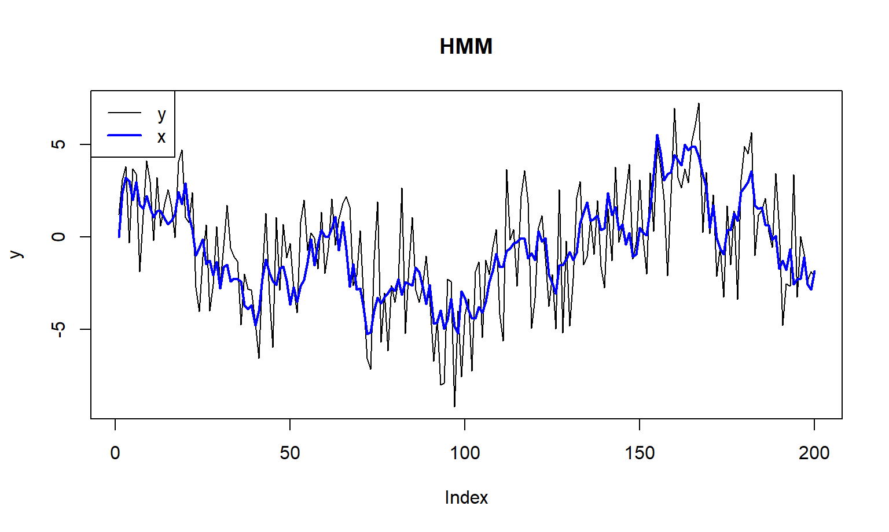
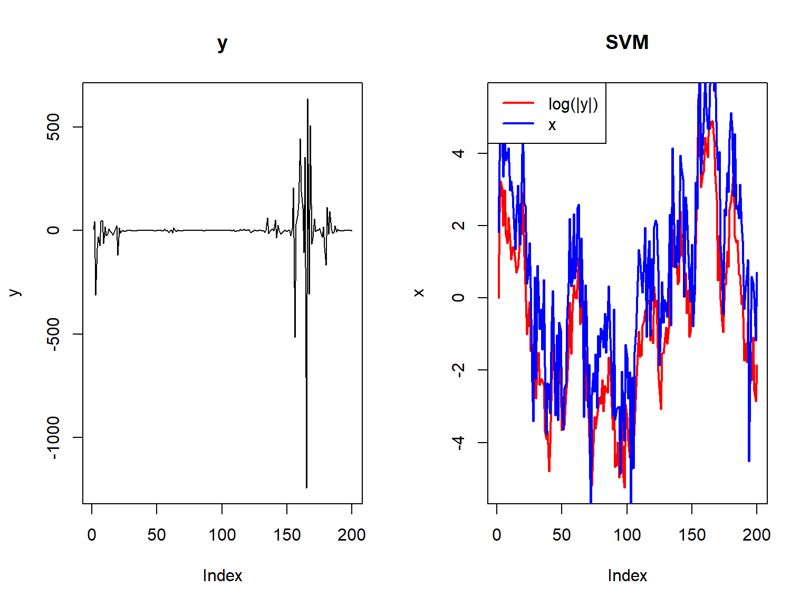
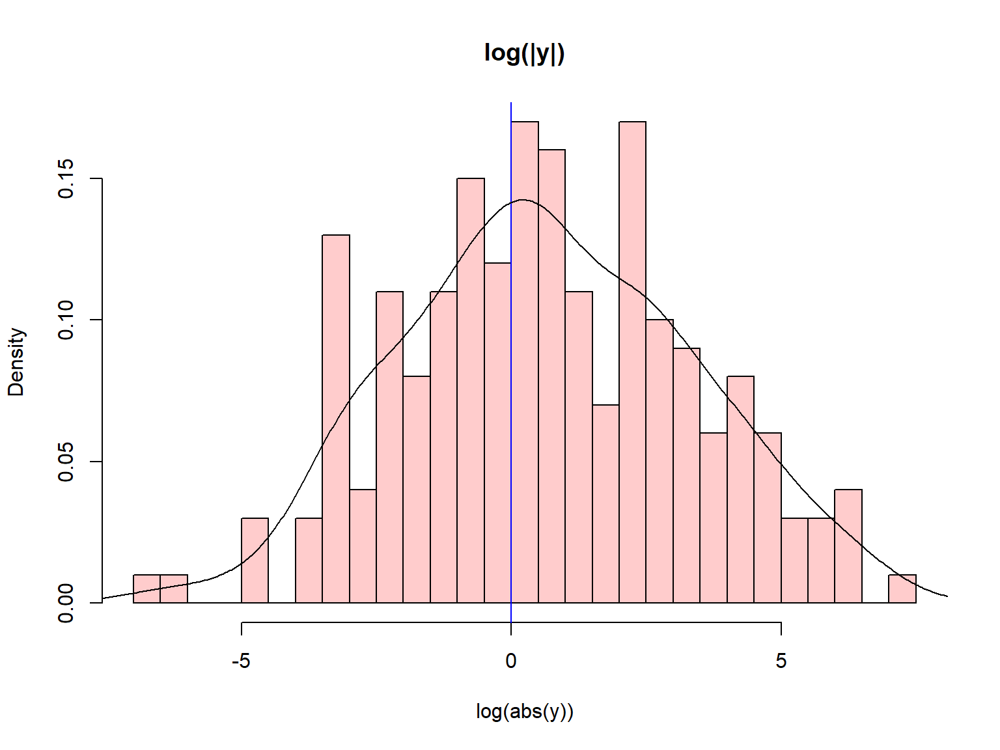

\[ x_{t} = \phi x_{t-1} + \epsilon_t, \; \epsilon_t \sim N(0, \nu) \]
phi = 0.9; nu = 1; T = 500
x = numeric(T)
for(t in 1:(T-1)){
x[t+1] = phi*x[t]+rnorm(1,0,nu)
}
Autocorrelation at lag \(k\): \(\gamma(k) = \phi^k\), one can see ``oscillatory" behaviour consistent with \(\phi < 0\)

\[ \begin{aligned} y_{t} &=x_{t}+\nu_{t} \\ x_{t} & \leftarrow AR(1 | \theta), \; \theta = (\phi, \nu) \end{aligned} \] The \(\nu_t\) terms are the errors of measurement, or observation, that corrupt the signal \(x_t\)

Canonical SVM:
\[ \begin{align} y_t & \sim N(0, \sigma_t^2) \\ \sigma_t & \sim \exp(\mu + x_t) \\ x_t & \sim AR(1 \mid \theta) \; \theta = (\phi, \nu). \end{align} \]
\[ \begin{align} z_t & = \mu + x_t + \nu_t, \quad \text{where} \; \nu_t = \log(\kappa_t)/2\\ x_t & \sim AR(1 \mid \theta); \; \theta = (\phi, \nu) \end{align} \]


Data-sets, R and Stan Codes are available here: https://github.com/DattaHub/sls-2019
This presentation is available here (source codes are in sls-2019 repo): http://dattahub.github.io/sls-2019/time-series-demo.html#1
Stan examples are taken from this Stan tutorial for time series: http://tharte.github.io/mbt/mbt.html
We’ll fit a mean-only Normal “shocks” model.
The data-set we’ll use is the “B.2-PHAR” tab on the excel file “Time Series and Forecasting Appendix B Tables”. (You don’t need to open this file for fitting the model.)
The R code “fitting-normal-mean-only-stan.R” will read the data-set and fit the Stan model in “normal-mean-only.stan”.
The stan code “mean-only_normal_predict_new_generated_quantities.stan” is an example of using the “generated quantities” block.
Let us look at this stan code carefully to understand the basic functional features.